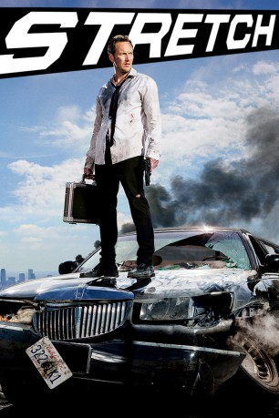

#1107 Stretch
 gesehen am 22.11.2015
gesehen am 22.11.2015
 
 IMDB-Wertung: 6.5 / 10
IMDB-Wertung: 6.5 / 10  Metascore: 0
Metascore: 0 
Limo-Fahrer Stretch hat sich ganz schön was eingebrockt: Er hat Spielschulden in Höhe von 6000 Dollar gemacht und soll diese innerhalb von 24 Stunden begleichen. Andernfalls könnte es für ihn reichlich ungemütlich werden. Dafür nimmt er einen brisanten Auftrag an. Denn sein mysteriöser, sehr exzentrischer Klient ist ein Millionär, der sowohl für seltsame Sonderwünsche und einen ausschweifenden Lebensstil bekannt ist, was auch großzügiges Trinkgeld einschließt. Doch die Begegnung mit dem Millionär soll nicht die einzige Merkwürdigkeit dieser Nacht bleiben, denn je später der Abend wird, desto durchgeknallter werden die Gestalten, auf die er an jeder Ecke trifft.
Jahr: 2014
Dauer: 94 Minuten
FSK: 16
Land: USA Studio: Universal PicturesTonspuren: DTS - ,
Untertitel: Deutsch,
Auflösung: 1080p (1920x800) Größe: 5058 MB
Genre: Komödie, Krimi
Regisseur: Joe Carnahan
Drehbuch: Joe Carnahan, Jerry Corley, Rob Rose, Joe Carnahan
Soundtrack: Ludwig Göransson
Darsteller:
 Patrick Wilson als Stretch
Patrick Wilson als Stretch Ed Helms als Karl
Ed Helms als Karl James Badge Dale als Laurent
James Badge Dale als Laurent- Brooklyn Decker als Candace
 Jessica Alba als Charlie
Jessica Alba als Charlie Ray Liotta als Ray Liotta
Ray Liotta als Ray Liotta David Hasselhoff als David Hasselhoff
David Hasselhoff als David Hasselhoff Randy Couture als The Jovi
Randy Couture als The Jovi- Mindy Robinson als The Jovi's Girl
- Claire Lanay als Girl #1
 Norman Reedus als Norman Reedus
Norman Reedus als Norman Reedus- Rad Daly als Tweaker and Fed #1
 Max Daniels als Paparazzo 2
Max Daniels als Paparazzo 2- Jason Suhrke als Paparazzo 3
- Nick Fenske als Paparazzo 1
 Eddie J. Fernandez als Store Clerk
Eddie J. Fernandez als Store Clerk Matthew Willig als Boris
Matthew Willig als Boris Shaun Toub als Nasseem
Shaun Toub als Nasseem Ryan O'Nan als Agent Hudack, Masked Valet
Ryan O'Nan als Agent Hudack, Masked Valet- Katie Kerr als Marcy
 Christopher Michael Holley als Caesar
Christopher Michael Holley als Caesar- Jacqui Holland als Escort Carrie
 Ben Hernandez Bray als Ignacio
Ben Hernandez Bray als Ignacio Jason Mantzoukas als Manny the Valet
Jason Mantzoukas als Manny the Valet- Dominic Bagarozzi als Ignacio's Homie
- Meghan Aruffo als Party girl
- Jennifer Barbosa als Restaurant Patron
- Kevin Bigley als Faux Hawk
- Etalvia Cashin als Bridesmaid #4
- Jessica Dowdeswell als Club Girl
- Jasmine Golden als Secretary
- Ahman Green als Doorman
 Keith Jardine als Doorman / Federal Agent
Keith Jardine als Doorman / Federal Agent- Erika Jordan als Escort Salene
- Cece King als Waitress
- Honda King als Party girl
- M@tch als S & M Party Guest
 Anne McDaniels als Ignacio's Exotic Dancer
Anne McDaniels als Ignacio's Exotic Dancer- Melissa Shoshahi als Bridesmaid #3
- Cassandra Starr als Club Dancer
- CG Thomas als Club bouncer
- Chris Waters als Clipboard Holder / Fed Agent
- Michael O. Watkins als Staring pedestrian, deleted scene
- Shaun White als Cameo #3 skateboarder
- Rick Yudt als Doorman
- Joe Carnahan als FBI , uncredited
- Sebastien Large als Party goer , uncredited
 Chris Pine als Roger Karos , uncredited
Chris Pine als Roger Karos , uncredited- Sydney Bruso als Girl #2
- Zach Calig als Honeymoon Husband
Datei: X:\2014(N-Z)\Stretch (2014, FSK16, 1920x800).mkv seit 20.05.2015
Festplatte: HD 2013(I-Z)-2014(A-Z)
 Es gibt insgesamt 163 Filme in der Gruppe '2014(N-Z)'
Es gibt insgesamt 163 Filme in der Gruppe '2014(N-Z)'